- Document
- Paris, BnF, ms. Espagnol 318, no. 93, f. 118r-v (Gallica
btv1b52503046q, views 446-447). A letter all in cipher, Venice, 24 February 1504. By the catalogue: Lorenzo Suárez de Figueroa, Spanish ambassador at Venice, to Ferdinand and Isabella. The page has no signature and no address. - New
- This is the first reading known to us. The key is rebuilt from the letter. We found no period decipherment (the searches are listed in the folder). The Spanish court read this letter in 1504, so a period decipherment existed; we did not find it.
- State
- 1,094 of 1,202 = 91.0 % of the tokens have a firm value; 1,170 of 1,202 = 97.3 % with the probable values. Eight code words have no value. The reading has gaps.
- Not the cipher of no. 94
- The neighbour letter, no. 94 (its page), has another key. The two keys have the same build and share seven signs.
The key
Signs for letters: 55 sign types for 24 letters and "ll". A common letter has 2 to 5 signs. Four joined groups stand for one letter each: gto = t, gt = e, otto = n, tto = o. The names of the signs are ours. The image of a sign is cut from the three lines below.
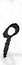
pa94 times+a31 times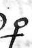
p+a14 timesa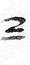
2=b9 timescboncettcbonceb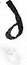
dlc34 timesc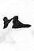
n-d26 timestbd9 times=8donced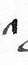
^e63 timesgte13 times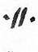
.ll.e11 times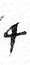
4e9 timeseXf9 timesf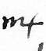
m4g21 timesg2~h3 times7h2 timesh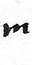
mi44 times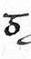
5i25 timesiPj3 timesj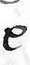
el27 times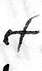
cfl8 timeslqpill6 timesll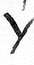
Ym21 timespim4 timesY=m2 timesmfsn39 timesotton19 times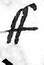
ffn6 timesn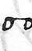
ooo61 times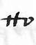
ttoo6 times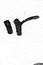
iro4 times#3o2 timesooonceoC.p15 timestb2poncep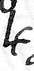
h4q7 timestriqonceq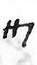
IIIr62 times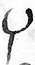
psir7 timesXor7 timesr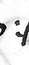
:/s27 times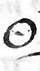
O.s11 timestfs3 timesy-sonces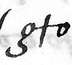
gtot41 timesX:t4 timest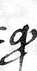
qpu34 timesu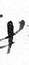
pqv11 timesvExoncex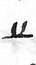
u_y27 timesyy4 timesyZ=z5 timesu3z2 timeszIn each box: the sign, our name for it, its letter, and how many times the letter has it in the 50 lines. A box with no image: the sign is not in the three lines below. A question mark: the value is a guess. The shapes in words: transcription/SIGNS.md.
Code words: 72 words of two or three small letters. A code word stands for a word, or for a syllable inside a word. The code words of the three lines:
| Code word | Value | Grade | Places in the letter |
|---|---|---|---|
| gad | de | A: firm, fixed by three or more clear words | 25 |
| gae | dar | B: probable, fits every place, but few places | 2 |
| heg | en | A: firm, fixed by three or more clear words | 21 |
| hie | en el | B: probable, fits every place, but few places | 2 |
| hif | es | A: firm, fixed by three or more clear words | 10 |
| hoe | el | A: firm, fixed by three or more clear words | 9 |
| hug | esta | A: firm, fixed by three or more clear words | 10 |
| mat | no | A: firm, fixed by three or more clear words | 16 |
| nan | papa | B: probable, fits every place, but few places | 4 |
| pet | si | A: firm, fixed by three or more clear words | 10 |
| ris | un | B: probable, fits every place, but few places | 3 |
The code list follows the alphabet: code words in f stand for words in a or b, code words in g for words in c or d, and so on to r for s to y. All 64 code words with a value, the 8 with none, and a note on each corrected or doubtful value: KEY_TABLE.md. The key as a table for the decoder: key.py.
Worked example
Each box holds one token of the settled transcription: its image, its name, and its value by the key. The line under a group of boxes gives the word; the word division is ours. Z and ÷ are the two pause marks of the cipher.
f. 118r, line 8, tokens 1 to 23: the face and the heart
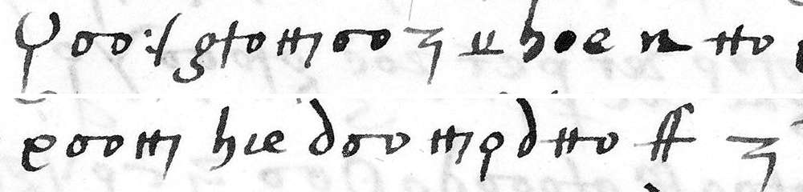
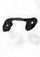
ooorostro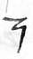
Zpause u_yy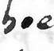
hoeeleln-dttooel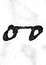
ooo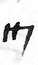
IIIrdolor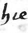
hieen elen eldlc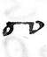
ooo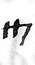
IIIrpa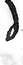
dlc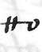
ttooffncoraçon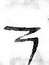
Zpauserostro, y el dolor en el coraçón
face, and the pain in the heart
The sentence begins in line 7: the joy "estava en el" face, and the pain in the heart. This is the ambassador's own view of how Venice took the news of the truce. The last six tokens of the line begin a sentence that is not settled; the example stops before them. The first transcription pass has the same token in 23 of these 23 places, and the blind second pass in 23.
f. 118r, line 22: the brief of the Pope
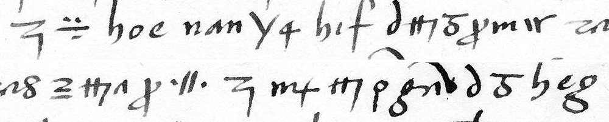
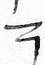
Zpause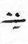
÷pause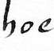
hoeelEl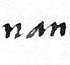
nanpapaPapaYm4eme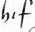
hifes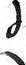
dlc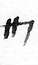
IIIr5ipqvmiiroescrivio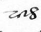
risunun2=b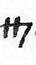
IIIr^e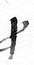
pqv.ll.ebreveZpause m4gIIIrpagaddedlc5ihegengradecien-El Papa me escrivió un breve, gradecien-
The Pope wrote me a brief, to thank
The last word goes on in line 23 ("gradeciendome"). Three code words stand for syllables here: hif = es in "es-crivio", gad = de and heg = en in "gra-de-ci-en-". Sanuto's diary has the same fact from the other side: on 23 February 1504 the Spanish ambassador said in the College that the legate had given him a brief of the Pope that thanked him (vol. 5, col. 891). The first transcription pass has the same token in 27 of these 27 places, and the blind second pass in 26.
f. 118v, line 5: Louis d'Ars in Venosa
quel Luys d'Arce está sitiado en Venosa.
that Louis d'Ars is besieged in Venosa.
The first word begins in line 4 ("a-quel"). The names are spelled with code words for their syllables: gae = dar in "d'Ar-ce", mat = no in "Ve-no-sa". Sanuto, Zurita and Guicciardini have Louis d'Ars shut in Venosa in February 1504. The first transcription pass has the same token in 25 of these 25 places, and the blind second pass in 25.
How sure
| Measure | Value |
|---|---|
| Cipher lines | 50, on two pages |
| Tokens with a firm value (grade A) | 1,094 of 1,202 = 91.0 % |
| Tokens with a firm or a probable value (grades A and B) | 1,170 of 1,202 = 97.3 % |
| Tokens identical in two transcription passes, the second one blind | 96.2 % (recto) and 93.6 % (verso) |
| Five-letter-group score of the key | -11.17; 500 shuffled keys: mean -15.87, best -14.68; real Spanish: -10.87 |
| Blind audit of the key, first run | 27 of 27 hidden values restored (12 signs, 15 code words) |
| Blind audit, second run on the 18 weak values | 12 exact, 1 near, 5 wrong |
| The alphabet rule of the code list | rank correlation 0.69 at the audit, 0.81 with the corrected key; 0 of 20,000 shuffled keys reach it |
The blind audit. A second run of the model, with a new context, hid 27 values of the key, drawn at random. A fresh reader got the transcription, the rest of the key, and the decode with gaps. It restored 27 of 27. Its limits: the 27 values all occur 3 times or more; to restore one sign of a letter that has several signs is easy; the fresh reader is a model of the same family as the first reader. In the second run, two of the five wrong answers were right against the key: the code words hog and ren were the wrong way round. The key is corrected: hog = estos, ren = Venecianos. The summary of the audit: evidence/audit.md.
Outside check. The content agrees with the diary of Marino Sanuto for the same days (Diarii, vol. 5). Col. 880, under 22 February 1504: a letter from the Venetian ambassador in France brings the truce "per 3 anni, con questo, chi ha si tegna". Col. 891, 23 February: the Spanish ambassador comes to the College and is told of the truce; he says that the legate gave him "uno breve dil papa che lo ringratiava". Cols. 846 and 910: Louis d'Ars is in Venosa. So the content proves the year 1504. The first reader says that it did not open Sanuto. The table of the facts, with Zurita and Guicciardini: README.md.
What is not resolved
- No palaeographer has checked the transcription. No historian has checked the reading.
- Eight code words have no value. Fifteen more have a guess or a doubtful value. The reading marks each place.
- Six values lie outside their band of the alphabet and are marked doubtful: got, fij, gaf, fab, pot, muy. A seventh, me~ = por, is outside its band but firm.
- Lines r08-r10, r13-r14 and v01 are not settled. The line on the Sultan's embassy (v06-v07) is doubtful: by Sanuto, an envoy of the Sultan was in Venice on 6 March 1504.
- The writer and the addressee come from the catalogue. The page does not name them.
- Not opened in the search for a period decipherment: the volumes of L. Suárez Fernández and of A. de la Torre, the digital library of the Real Academia de la Historia, the papers at Simancas. The full list:
evidence/audit.md.
The reading, line by line, with an English translation: READING.md. The machine decode: DECODE_RAW.md. Folder: espagnol-318-no93.